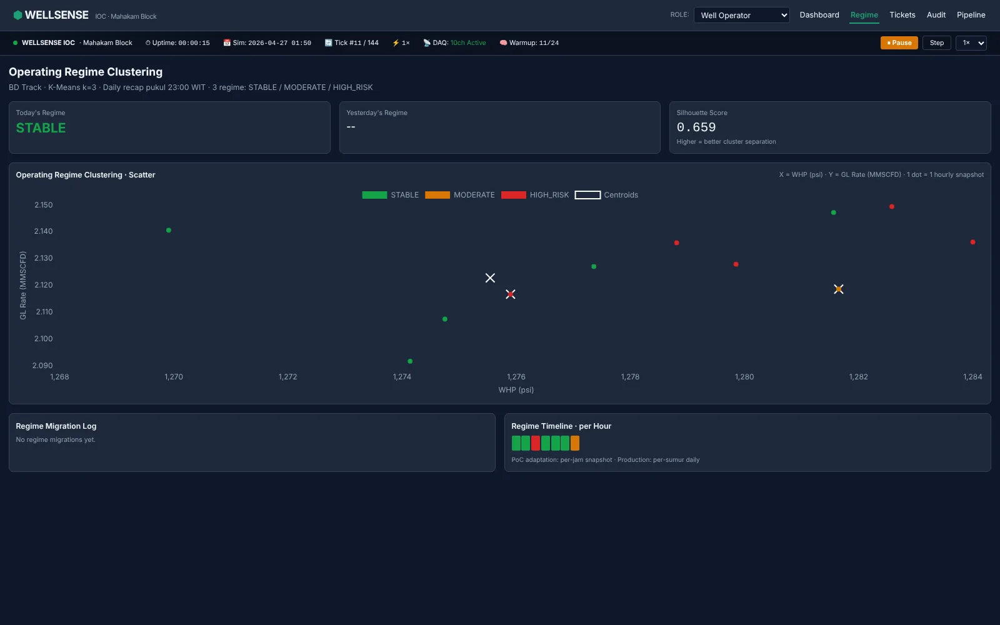
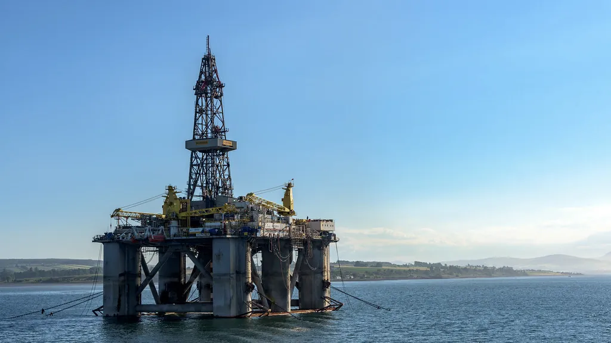

IOC Digital Hackathon AI/ML Hulu Migas 2026
Wellsense
Prototipe deteksi dini anomali sumur minyak lepas pantai. Dibangun lima mahasiswa untuk hackathon SKK Migas, lengkap dengan simulasi yang bisa dicoba langsung di browser.

Masalah
Data sensor sumur offshore berantakan: dalam satu kajian, 31,17% dari 15.872 variabel sensor di 21 sumur hilang atau rusak. Anomali yang telat terbaca berarti produksi yang hilang setiap jam.
Pendekatan
Arsitektur lima lapis. Sepuluh aliran sensor masuk, dibersihkan dan diseimbangkan dengan SMOTE adaptif, lalu dibaca dua jalur model: Isolation Forest dan LSTM dua lapis untuk peluang LPO per tick, K-Means untuk mengelompokkan rezim operasi harian. Setiap intervensi tetap harus disetujui manusia lewat RBAC tiga tingkat, dan tiket intervensi dicetak otomatis sebagai PDF untuk tanda tangan basah.
- Rp73,5 jt
- potensi kerugian per jam pada sumur gas-lift 1.500 BOPD
- 31,17%
- variabel sensor hilang/rusak dari 15.872
- ±US$69 rb
- estimasi biaya software per implementasi
- 5 lapis
- ingestion → ETL → dual-track ML → HITL → dashboard

